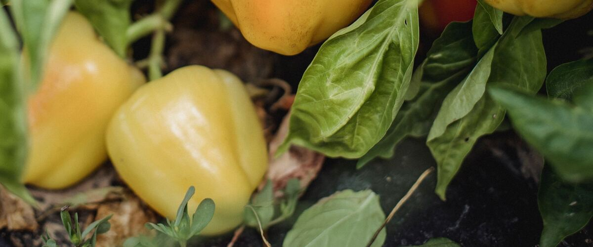

When to plant peppers in Yakima, WA
Start peppers from seed indoors Feb 27 – Mar 13, then plant the young plants in the garden in Yakima May 8–29.
- Difficulty
- Tricky here
- Sun
- Full sun; against a warm wall if possible
- Spacing
- 18 inches apart
- Planting depth
- Plant starts at the depth they grew in the pot
- Frost
- Killed by frost
- First harvest
- About 75 days after planting
Why these dates
Yakima's typical last spring frost is May 8. Frost kills peppers, so planting starts once frost risk drops, around May 8. Keep row cover or a frost blanket handy for the first couple of weeks, since a late frost is still possible.
Columbia Basin and low eastern valleys. Hot, dry summers and quick spring warm-up. Warm crops go in earlier than west of the Cascades, and irrigation matters more than rain.
How to grow peppers in Yakima
- Start seeds indoors Feb 27 – Mar 13 in trays or small pots under a grow light or in your sunniest window. Or skip this step and buy young plants (starts) at a garden center.
- Harden off the young plants: about a week before planting, set them outside for a few hours a day, a little longer each day.
- Plant them in the garden May 8–29, 18 inches apart. Plant starts at the depth they grew in the pot.
- Water deeply once or twice a week rather than a little every day, and mulch once the soil is warm.
- Harvest: Pick green any time once full size, or leave them to ripen red, which can take three more weeks.
Key numbers
- 75–85°FSoil to sprout
- Nights stay above 55°FPlant out when
- 6.0–6.8Soil pH
- Cool nightsBiggest risk
Growing notes
What makes the difference in Northwest gardens, in plain language.
Soil and feeding
Peppers like warm, well-drained soil with compost worked in and a pH of about 6.0 to 6.8. Use a balanced fertilizer and go light on nitrogen, which grows leafy plants with few peppers. A modest feeding when the first fruit sets keeps them going. Water deeply and evenly, about an inch a week, since dry spells can cause blossom-end rot on peppers just as on tomatoes. Wait to add straw mulch until summer, because it keeps cool soil cool.
Why warmth decides everything
Peppers barely grow when nights drop below about 55°F, and transplants set out into cold May soil can sit still for weeks. Flowers also tend to drop off when nights are cool or days are very hot. West of the Cascades, black plastic mulch to warm the soil, row cover for the first weeks, and a spot against a south-facing wall make a big difference. Early, smaller-fruited varieties like Gypsy, Ace, Early Jalapeño and Lunchbox snacking peppers ripen in a short, mild summer. East of the Cascades, heat is plentiful, but midsummer sun can scald exposed fruit, so leafy plants help.
Harvest and color
Every pepper starts green and changes color as it ripens. Green peppers are simply unripe, which is why red, yellow and orange ones are sweeter. In the Northwest, full color can take weeks, so pick some green to keep plants producing and leave others to ripen. When fall rain or frost threatens, pick everything full size. Peppers keep about a week or two in the fridge, and extras freeze well chopped with no blanching needed.
Common questions
When is the last frost in Yakima, WA?
Typically May 8. In 9 years out of 10, frost is over by May 27. These are 1991–2020 NOAA climate normals for Yakima Air Terminal.
Is it too late to plant peppers in Yakima?
The spring planting window runs through May 29. Later plantings may not have time to produce before the first fall frost, which usually arrives around October 4.
When should I start peppers from seed indoors in Yakima?
February 27 to March 13, which is 10 to 8 weeks before the May 8 planting date. Or buy young plants at a garden center instead.
Why are my pepper plants not growing?
Cold soil and cool nights are the most common reason in the Northwest. Peppers stall until nights stay above about 55°F. Black plastic mulch and row cover help, and plants usually take off once summer warmth arrives.
Why are my pepper flowers falling off?
Flowers drop when nights are too cool or days are very hot, and also when plants are dry. It usually stops on its own when the weather evens out. Keep watering steady and avoid heavy nitrogen.
How long does it take for green peppers to turn red?
Often about three more weeks after they reach full size, and longer in cool weather. Warmth speeds it up. Near the end of the season, pick peppers with some color and they'll often finish ripening on the counter.
Also plant in Yakima around the same time
Planting dates for peppers in nearby areas
- Pendleton, OR May 1–22
- The Dalles, OR May 1–22
- Wenatchee, WA May 1–22
- Tri-Cities (Pasco, Kennewick, Richland), WA May 1–22
- Walla Walla, WA May 1–22
- Moses Lake, WA May 1–22